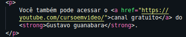
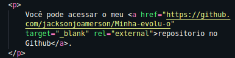

Os links são bastante ultil, vejá por
si só em
sites que você navega, sempre
tem um link que
vai te levar para alguma
outra pagina, video,
audio etc. E hoje vamos
aprender a ultilizar
alguns tipos de link.
Ja vou te adintar que a tag "base" é:
<a href=""> </a>
Onde o atributo href="" =
Reference of HyperText
será onde você irá
adicionar o endereço da pagina.
Agora vamos para praticá.
Vejá um exemplo de sua ultilização:

Resultado:
Você também pode acessar o canal gratuito
do Gustavo guanabara.
Ao clicar no link você será redirecionado para o canal
do professor Gustavo guanabara.
Ao adiconar um link externo de um outro site
o recomendado é usar um outro atributo:
Otarget="_blank"ele vai abrir uma pagina
em branco. Exemplo:

O link interno vai ser ultil para a navegação entre
paginas no seu site. Vamos ultilizar a mesma tag
anterior, mas desta vez no tributo
href="caminho_da_outra_page" vamos
adicionar o caminho da outra pagina (pasta por pasta).
Exemplo:
Pagina 2
Codigo fonte:
<a href="pages/page2.html">Pagina 2</a>
Crie uma pasta onde você vai disponibilizar o
arquivo para
download, pós isso iremos ultilizar
a mesma tag anterior
( <a href="caminho_do_arquivo"> </a> ),
onde no
href="" você irá adicionar
o caminho do arquivo ( pasta por pasta.
Vamos ultilizar mais um
outro atributo ( download="nome do arquivo" ),
mas lembre-se, possa ser que esse atributo não funcione no seu
navegador, mas não se preocupe.
Baixar livro do Gunabara
Codigo fonte:
<a href="livro/10 - Ligação em toda parte.pdf" download="Ligação em toda parte">